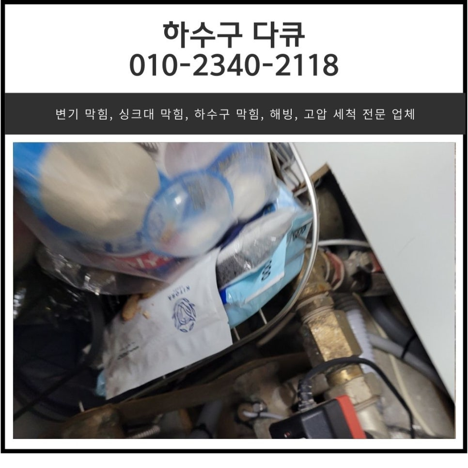
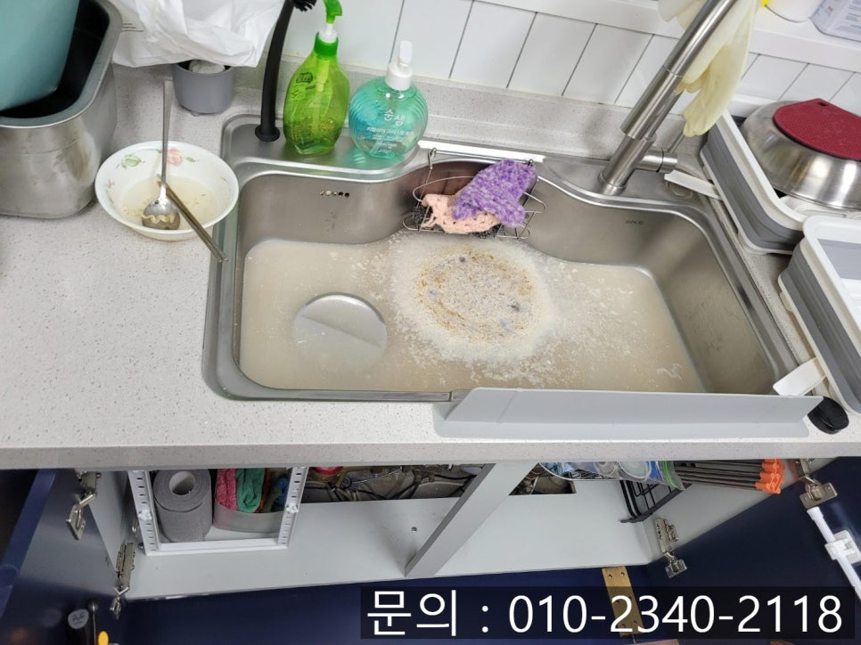
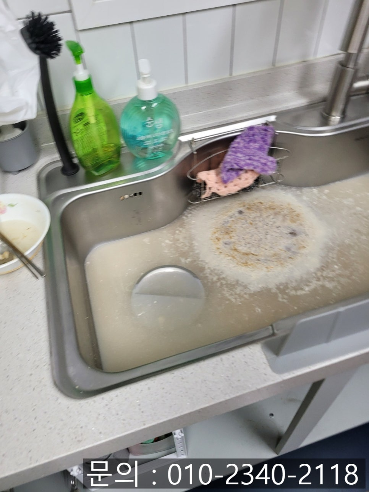
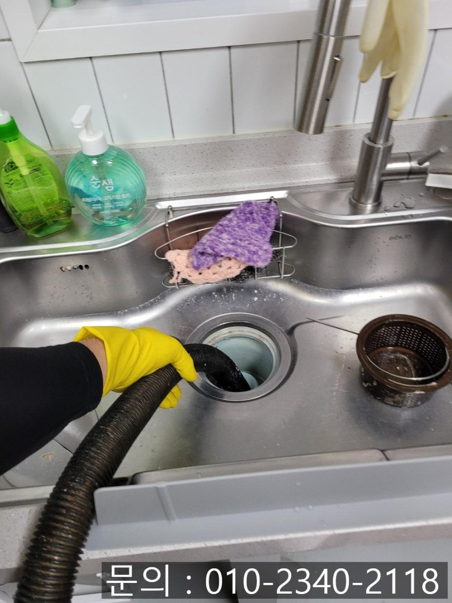
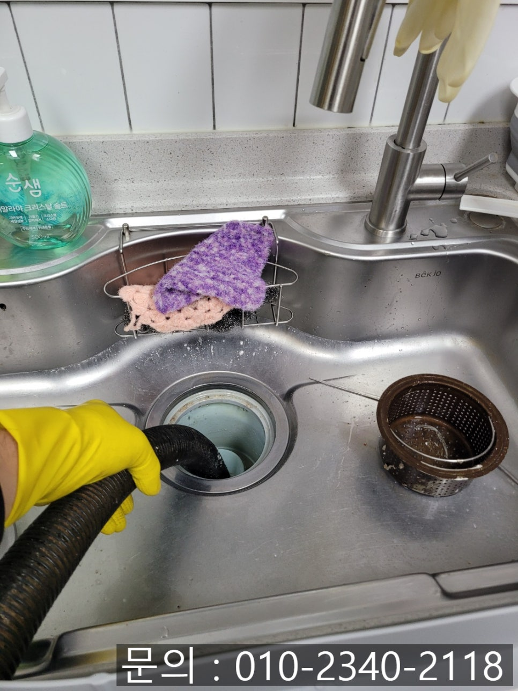
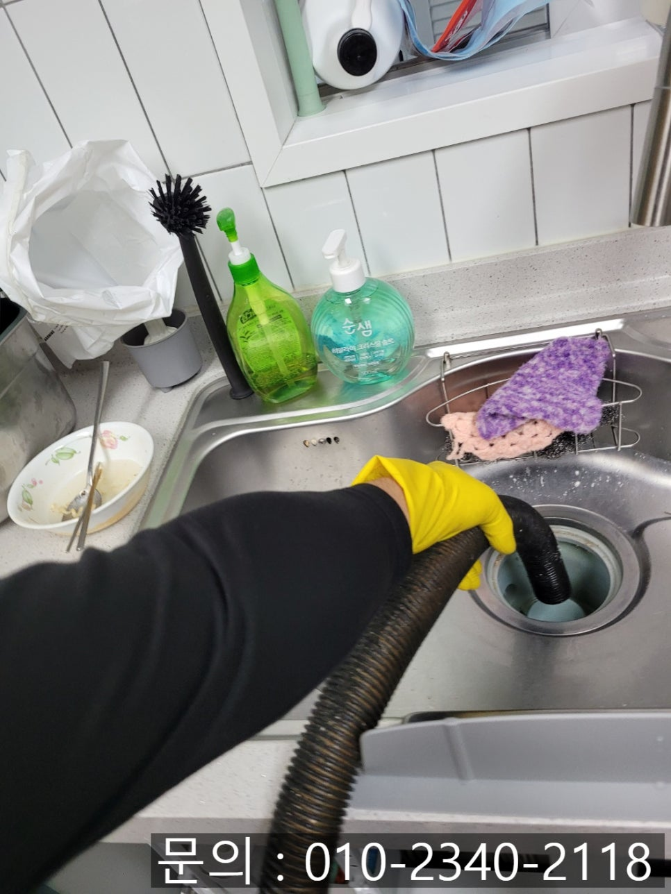
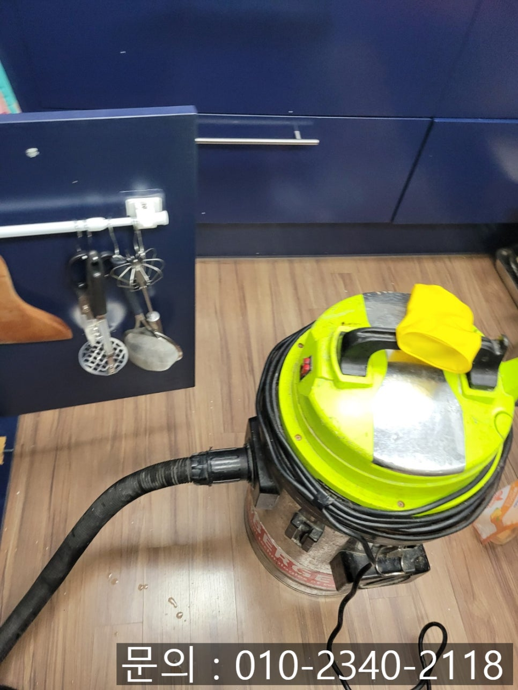

🏠 남양읍 싱크대 막힘 화성 봉담읍 하수구 역류 뚫는 방법
화성 남양 싱크대막힘 전문 시공 후기

📋 작업 개요
- 위치: 화성 남양, 남양, 화성
- 서비스 유형: 싱크대막힘, 하수구막힘, 배관막힘, 역류해결, 뚫는업체, 배관청소
- 작업 일시: 2024. 12. 11. 21:17
- 업체명: 하수구수사대 (010-5615-2118)
🔍 문제 상황
안녕하세요.
남양읍 싱크대 막힘, 화성 봉담읍 하수구 뚫는 방법을 소개해 드릴 하수구 다큐입니다.
오늘 남양읍 싱크대 막힘으로 소개해 드릴 현장은 가정집인데요.
고객님께서 남양읍 싱크대 막힘으로 인해 배수구에서 역류하고 있다고 연락을 주셔서 다녀왔습니다.
남양동 싱크대 막힘으로 연락 주신 고객님은 통화가 연결되자마자 바로 방문해 줄 수 있는지부터 물어보셨어요.
어떤 배관에 문제가 발생한 건지 여쭤보니 싱크대 배수구로 상한 국을 좀 버렸는데 배관이 막힌 건지 역류가 발생해 주방을 사용하지도 못할 뿐 아니라 싱크대가 엉망이 됐다고 최대한 빨리 해결해 달라고 요청하셨습니다.
마침 다른 현장 작업을 정리하고 있던 찰나에 연락을 받아 신속하게 장비를 챙겨 방문해 드렸어요.
현장에 도착해 주방으로 들어가 보니, 고객님께 왜 그렇게 다급하게 전화 주신 건지 바로 이해할 수 있었습니다.

🔎 원인 분석
💡 전문가 진단: 정밀 진단 장비를 사용하여 슬러지의 고착 여부를 판명하고 타격/세척 작업을 실시했습니다.
유선상 말씀해 주신 것처럼 싱크대 배수구로 흘려보냈던 음식물이 흘러가지 못하고 거꾸로 역류해 주방을 사용할 수 없는 상태였어요.
남양읍 싱크대 막힘으로 인해 점심 식사도 제대로 못한 고객님을 위해 신속하게 작업을 시작했습니다.
우선 싱크대로 역류한 이물질은 석션을 이용해 빨아드려 제거하는 작업을 진행했어요.
석션은 진공청소기와 같은 원리를 이용해 이물질을 제거하는 장비에요.
배수구에 넣고 석션을 작동시키자 순식간에 모두 제거되었습니다.
이제 배관 내부에 어떤 문제가 있어서 통수되지 못하고 역류된 건지 확인해 봐야겠죠?
화성 봉담읍 하수구 역류 뚫는데 필요한 장비들을 모두 준비한 다음 주름 호스를 분리하고 내시경 카메라를 배관 내부로 진입시켰습니다.
싱크대에서 사용한 물이 느리게 흘러가는 게 아니라 정말 역류할 정도라면 배관 내부도 이물질이 많이 쌓여 있을 것 같은데요.
예상했던 대로 내시경 카메라가 배관 내부로 진입하자 화면에 붉게만 보였습니다.

🔧 작업 과정
이물질이 꽉 찬 배관에 카메라가 진입하자 조명으로 인해 아무것도 보이지 않고 붉게만 보입니다.
최근 싱크대를 사용하면 물이 흘러 내려가는 속도가 느려지는 것을 느끼긴 했지만 대수롭지 않게 생각하셨던 고객님께서 많은 양의. 사골 국물을 흘려보냈더니 과부하가 걸린 배관에서 소화시키지 못하고 역류한 것 같아요.
화성 봉담읍 하수구 역류의 정확한 원인을 파악한 하수구 다큐는 고객님께 뚫는 방법에 대해 설명해 드린 다음 작업을 진행하기로 했습니다.
하수구 다큐다 화성 봉담읍 하수구 역류 뚫는 방법으로 선택한 전문 장비는 리지드사의 플렉스 샤프트에요.
플렉스 샤프트 장비는 싱크대 배관 청소에 가장 적합한 장비에요.
얇은 노즐이 배관으로 진입해 360도로 회전하면서 이물질을 타격해 제거하는 역할을 하는데요.
내시경 카메라로 이물질의 위치를 파악해가며 함께 작업을 진행해야 합니다.
플렉스 샤프트 장비를 이용해 이물질을 타격해 잘게 부숴주고 석션 장비를 이용해 작아진 이물질을 빨아들여 완벽하게 제거하는 작업을 수차례 반복해서 진행하자 배관이 모습을 드러냅니다.
하지만 배관 깊은 곳에 잔여 이물질이 남아있는 것이 확인되어 내시경 카메라로 체크해가며 제거하는 작업을 추가로 진행했어요.
몇 차례 더 내시경 카메라로 확인하며 플렉스 샤프트 장비로 잘게 부숴주고 석션으로 빨아드려주는 작업을 반복하자 남아있는 이물질 하나 없이 깨끗해진 배관을 확인할 수 있었습니다.
액체류인 찌개나 국물을 배수구로 버리는 것은 괜찮다고 생각하시는 분들이 생각보다 많이 계시는데요.
국물에 포함되어 있는 기름 성분이나 고춧가루 등이 배관에 쌓일 수 있기 때문에 최대한 조심해 주셔야 합니다.
고객님께서도 앞으로는 신경 써서 관리해야겠다고 말씀해 주신 만큼 몇 년간은 문제없이 싱크대를 사용하실 것 같아요.


✅ 작업 완료
싱크대 막힘은 언제 어디에서나 발생할 수 있는 설비 문제입니다.
지금 하수구 막힘으로 고민하고 계신다면 부담 없이 연락 주세요.
확실하게 뚫어드리겠습니다.
경기도 화성시 노작로 147 601-B234호




⚠️ 주방 싱크대 배관 막힘 예방 수칙
- ✅ 기름기가 묻은 식기나 프라이팬은 설거지 전 키친타올로 반드시 기름때를 닦아내세요.
- ✅ 주기적으로 싱크대 개수대에 뜨거운 물을 가득 받아 한 번에 내려 배관 내부 기름을 씻어내세요.
- ✅ 배수구 거름망을 미세한 필터로 사용하시고 음식물 찌꺼기가 틈으로 새어 들지 않게 관리하세요.
- ✅ 베이킹소다와 식초를 뜨거운 물과 함께 일주일에 한 번씩 부어주면 배관 살균과 막힘 예방에 좋습니다.
💡 핵심 정리
- 확실한 장비 작업(내시경 점검 및 샤프트 스케일링)으로 원인을 뿌리 뽑습니다.
- 작업 후 1년 이내에 동일한 부위 재발 시 100% 무상 A/S 서비스를 보장합니다.
- 서울 · 경기 · 인천 전 지역에 24시간 언제든 긴급 출동할 수 있도록 항시 대기 중입니다.
❓ 자주 묻는 질문 (FAQ)
🚨 화성 남양 싱크대막힘 문제로 고민이신가요?
정확한 원인 진단과 확실한 시공으로 재발 없는 해결을 약속드립니다.
24시간 긴급 출동 | 서울 · 경기 · 인천 전지역 | 1년 내 재발 시 무상 A/S